Emerging Fintech Trends in Indonesia
1. Introduction
The Financial technology industry, also known as Fintech, has experienced a global surge over the past few years, and has changed financial industry significantly. The US is the top funded region in Q4 2022 with US$3.9B Fintech investment while Europe and Asia attracted similar fundings at US$2.8B and US$2.7B respectively (CBInsights, 2023, p. 3). While US remains as the top country for Fintech investment in 2022, it was observed that Fintech investment is flowing into emerging markets. In Indonesia, it was reported that there was a 30% growth with US$1.9B in investment funding (CBInsights, 2023, p. 5). This is in spite of several macro-economic concerns such as (1) high inflation, (2) rising interest rates, and (3) projected slowdown of economy in 2023 (ABN AMRO Ventures, & Dealroom.co, 2023). With these as a backdrop, it is worthwhile to explore the resilience and attractiveness of Indonesia’s Fintech landscape.
In this report, we will first identify the Fintech industry trends in Indonesia, and zoomed into the Fintech lending space specifically. Second, we will analyse why such trends occur and their associated socio-economic challenges. Third, we draw comparison between China’s Fintech lending space and that of Indonesia’s. Lastly, we make recommendations for potential/ new Fintech lenders who wish to operate in Indonesia.
2. Fintech Landscape in Indonesia
Various reports have highlighted the exponential growth Indonesia’s Fintech landscape in recent years, which was driven by a huge 300 million population size, increasing digital penetration, positive investor engagement, and regulatory initiatives that encourage financial services innovations. These conditions are conducive for FinTechs to innovate and collaborate with local banks and government, and could tap from the large market size available in Indonesia. VCs remains bullish for Indonesia’s Fintech industry, where the number of FinTech companies have increased six-fold from 51 in 2011 to 334 in 2022 (Kumar et al., 2023). Two key observations were made pertaining to the Indonesian’s Fintech industry.
In terms of funding, liquidity in the market has tightened due to global macroeconomics concerns which resulted in less funding as compared to during the pandemic times. Investors has become more selective and increasingly focus on profitability and metrics such as lifetime value per customer, customer acquisition cost, and retention rates. Consequently, to secure fundings, startups increasingly focus on establishing cost-effective customer acquisition, shift to higher-margin products and diversification of product lines. In short, gone are the days where investors can tolerate startups with a protracted “growth” stage in the name of market penetration strategy. Instead, what we are seeing these days amongst successful startups are brand names/ companies like Kopi Kenangan, which has demonstrated the ingenious and competitive idea of selling similar product at affordable prices to mass market compared to existing competitors (e.g. Starbucks).
In terms of regulatory environment, Indonesia regulators are increasingly receptive to the emerging Fintech landscape through its supportive government policies and regulations. Strong regulatory clarity and direction around emerging technology as well as new financial products and offerings are used to encourage innovative business models and attract investment funding. The Indonesian Payment System Blueprint 2025 roadmap and the SNAP national standard have opened opportunities for innovation in the open banking landscape which enables FinTechs and incumbent FIs to integrate easily through standardized APIs (Kumar et al., 2023). This induces healthy competition between FinTechs and established FIs that will potentially improve the quality of the local financial services industry. Indonesia has also introduced cryptocurrency regulations and standards such as authorizing crypto asset trading, paving the way for FinTechs like Pintu to secure over US$300M in funding (Kumar et al., 2023). See Annex for the detailed insights on the Global and Indonesia Fintech Industry Trends.
2.1 Emerging Fintech Sectors in Indonesia - Fintech Lending
While the payments sector has been a dominant Fintech sector globally and domestically, we see signs of saturation in this sector which already has a Fintech penetration in Indonesia at 74% (Kumar et al., 2023). As such, this sector is becoming less attractive to VCs. On the other hand, we see a shift of focus amongst VCs towards the Lending sector (Lendtech), which has overtaken the Payments sector as the highest invested sector in 2022. As such, we assessed that the Lendtech segment to continue growing for the next 1-2 years, until this segment reaches saturation.
2.2 Fintech Lending in Indonesia
Rapid Growth of Fintech Lending in 2023
The Fintech lending industry in Indonesia has expanded exponentially from 2019 to 2022. In 2022, it was estimated that the Fintech loan disbursement was 250 Trillion Rupiah, a 58% growth from 2021 (Otoritas Jasa Keuangan, 2023). However, it was also observed that the Fintech lending business has showed signs of saturation starting from early 2023 (see Figure 1 and 2) (Otoritas Jasa Keuangan, 2023). That said, the growth of the Fintech lending will continue, albeit at a slower rate before it reaches saturation point. We assessed that this saturation could be due to (1) the increase in Non-Performing Loans (NPL), making Fintech lending a less attractive business than expected; and (2) Increased competition from both registered and non-registered lending platforms.
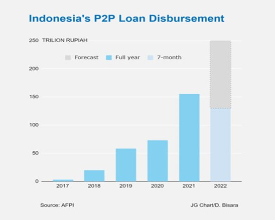
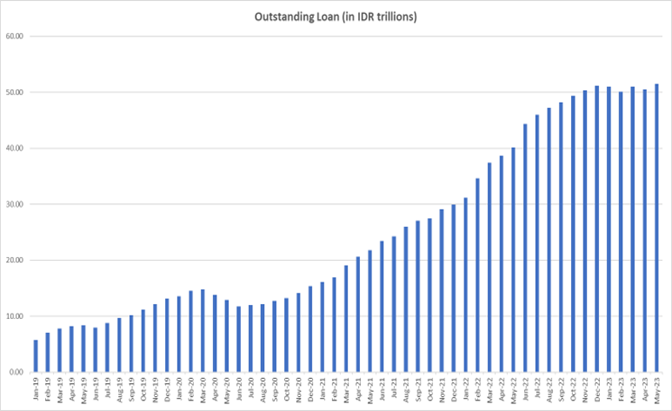
Decrease in the number of Fintech platforms in 2021
We assessed that the number of Fintech platforms have reached an equilibrium from early 2022 onwards, where we observed the number of lending platforms to remain constant at 102 (Otoritas Jasa Keuangan, 2023). It is worthwhile to note that there was a significant decline in the number of lending platforms in 2021. There were 148 lending platforms in Jan 2021, and by mid-2023, there are only 102 left (see Figure 3) (Otoritas Jasa Keuangan, 2023).
This was because of the introduction of more stringent government regulations (Regulation No. 10/POJK.05/2022). For example, it was mandated that the maximum loan that can be disbursed to borrower cannot exceed 2 billion rupiahs. Another rule is that lender must have at least 25 billion rupiah as the paid-up capital at the time of establishment. We assessed that the tightening of these regulations are commendable in order to ensure that the Fintech lending industry grow in a sustainable manner, and at the same time offer consumers protection.
From that perspective, the decrease in the number of Fintech platforms is potentially a healthy one for the financial industry.
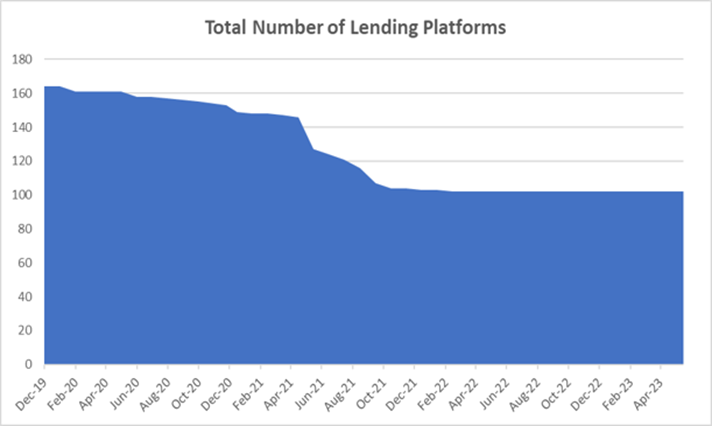
Increase in Non Performing Loans
After a sharp decline in NPL ratio in 2020, it was observed that the NPL ratio increased steadily from 2021 onwards (see Figure 4) (Otoritas Jasa Keuangan, 2023). This is a worrying trend for the Indonesian government as it can potentially give rise to a myriad of socio-economic issues which will be elaborated in Section 3.0 below.
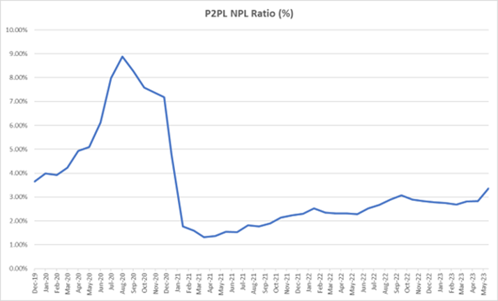
3. Analysis of Fintech Lending Trends in Indonesia
We assessed that the increase in outstanding loans and the increase in NPL amongst Indonesians to be due to (1) High Internet and Mobile Penetration; (2) Low Financial Literacy amongst Indonesians; (3) Low Financial Inclusion in Indonesia; (4) Introduction of Digital Identity and Ease of e-Know-Your-Customers (e-KYC); and (5) National Culture.
High Mobile Penetration
The surge in internet and mobile penetration in Indonesia in the past few years, coupled with COVID-19 situation, registered a total of 79.4% mobile users (or ~180 million people) in 2023, and is expected to grow to 90% by 2028 (Nurhayati-Wolff, 2023). This enables both the FinTechs and the large Indonesia population to connect with each other in the digital world with wide variety and easy access to e-commerce, personal data for e-KYC, and banking services.
Low Financial Literacy
Indonesians have a financial literacy of 38% which means that about 140 million Indonesians do not understand financial concepts such as loans where they are unable to manage their funds and loans (Otoritas Jasa Keuangan, 2020). With easy access to the banking services, Indonesians with low financial literacy may have limited understanding on the technicalities and impact of the financial products such as loan. The increase in default rate could lead to downstream socio-economic problems that the government actively seeks to manage.
Low Financial Inclusion in Indonesia
About 76% of Indonesians has access to legitimate financial services, likely due to the high mobile penetration rate stated earlier (Otoritas Jasa Keuangan, 2020). Specific to loans, 71% of the low-to-medium income earners in Indonesia do not have access to credit services and have higher propensity to turn to unlicensed money lenders (PwC, 2019, p. 11). This is more pertinent for those in remote areas, and gig workers such as Gojek and Grab workers who do not have regular income streams. This trend is also fueled by the fact that banks are not interested in servicing low-income workers who are seeking small loans due to the low profit margin.
Digital Identity and Ease of –KYC
Since COVID-19, the Indonesian government has implemented the use of digital identity to disbursed government grants. The corollary to this is the ease of e-KYC that enable FinTech companies to onboard their customers and comply with the regulatory requirements more efficiently and effectively. This drives the adoption of these Fintech lending platforms amongst Indonesians who have access to mobile internet services. One example is GoJek’s Buy Now Pay Later (BNPL) services.
National Culture
Indonesians have the tendency to adopt a short-term orientation and celebrate life pleasures and happiness. These behaviours are not necessarily undesirable. However, when coupled with the low financial literacy, it can potentially be a ‘deadly mix’ that propelled individuals towards indebtedness, which is worrisome for the Indonesian government.
4. Challenges associated with Fintechs and Fintech Lending
In this section, we look at the wider challenges as a result of the growth of Fintech in Indonesia, followed by the specific challenges pertaining to Fintech lending specifically.
4.1 Socio-economic Issues caused by the Growth of Fintechs
The emergence and rapid growth of Fintechs have undoubtedly disrupted and revolutionized the financial landscape, offering innovative and convenient solutions to both individuals and businesses. That said, this trend is not without challenges. Various socio-economic issues have been identified thus far, such as data privacy and security, fintech adoption rates, and unequal access to financial services.
In the 2020, Asosiasi Fintech (AFtech) Indonesia conducted a survey amongst its members to find out what were their main concerns and 70% of respondents indicated a need for improved polices related to data privacy and security (Setyowati, 2022). 63% of these respondents felt that there was lack of clarity in implementing regulations (Setyowati, 2022). Mishandling or unauthorised access to sensitive financial information can lead to identity theft, fraud, and other cybercrimes, eroding users’ trust in fintech services. The cross-border nature of fintech operations exacerbate the problems since different jurisdictions may have varying data protection laws, and coordinating international efforts to safeguard user data can be complex.
The next challenge Fintechs face is the lack of trust on Fintech products, leading to the lack of adoption. BCG conducted a survey in early 2023 to find out what were the main concerns of users when adopting Fintechs. One key issue, especially amongst the younger population indicated that they were spoilt for choice as there are too many apps to select from, and that some Fintech companies chargers higher fees than banks (Kumar et al., 2023). Others rated the lack of trust with Fintechs and onboarding as the main issue as to why they have not used a Fintech company. Such “thousand flower bloom” phenomenon is expected, and will have to take some time before these Fintech products and services gain the trust of the consumers, followed by wider adoption.
4.2 Socio-economic Issues caused by Fintech Lending in Indonesia
One of the key socio-economic issue related to Fintech lending is indebtedness. The ease of obtaining these loans can lead individuals, especially those who lack financial literacy or understanding of loan terms, to get into indebtedness. In 2020, Indonesia’s NPL ratio surged rapidly to close to 8% due to easier access to Fintech lending, as well as due to COVID-19 (Otoritas Jasa Keuangan, 2020). This far exceeds the Non Performing Loan (NPL) thresholds of 5% set by most countries. Consequently, the Indonesia’s banking sector was weakened, credit crunch set in, and investors’ confidence were reduced. While the NPL rate is below the threshold now, the steady increasing of the NPL in Indonesia is certainly a main cause of concern that needs to be tackled.
Another socio-economic issue is on predatory lending. There were instances where Fintechs took advantages of those individuals who lacked financial literacy and offered them loans which are more than what they can afford to repay. Some lending platforms might not adequately disclose fees interest rates, or terms, leading to potential exploitation of borrowers. Additionally, unethical collection practices still exist since are no SOPs for debt collection yet (PwC, 2019).
5. Comparison between China’s and Indonesia’s Fintech Lending landscape
In this section, we draw comparison between China and Indonesia’s Fintech lending landscape. China was chosen as a reference point because our group assessed that there were some similarities between the two countries in the Fintech lending space, and useful insights can be drawn from there.
5.1 The rise and fall of Fintech Lending in China
The emergence and rapid growth of Fintech lending in China from 2007 can be largely attributed to the prevalent financial inclusion problem at that time. As the Global Financial Crisis unfolded, the credit appetite of incumbent financial institutions was negatively impacted. Fintech lending platforms provided an alternative source of funding, meeting a crucial need from vast sections of the population who wanted to continue to participate in investments and financing activities. However, this rapid growth also gave rise to considerable issues such as fraud and high default rates. The inevitable fallout manifested dramatically in 2015 with the Ezubao Ponzi scheme. Operating as a P2P lending platform, Ezubao defrauded around 900,000 investors out of an estimated $7.6 billion (PwC, 2019, p. 16).
This scandal and others like it, served as a catalyst for regulatory intervention, casting a spotlight on the risks associated with a largely unregulated Fintech lending industry (Reuters Staff, 2017). From 2016, Chinese regulators launched a series of strict regulations and measures, which peaked with an industry-wide overhaul in 2018. This resulted in many Fintech lending platforms exiting the market; and by 2021, the Fintech lending industry in China nearly vanished (Hamilton, 2020).
5.2 China versus Indonesia - How the contexts may differ
Whilst many analysts have likened the burgeoning online lending industry in Indonesia to that of China’s, a comparison of the online lending landscapes in both countries reveals several key differences. For example, in terms of customer base, Indonesian fintech lenders cater to a broader base, targeting both underserved individuals and Micro, Small, and Medium Enterprises (MSMEs), enabling them to benefit from a diversified loan book. This contrasts with Chinese lending platforms, which primarily had focused on individuals without access to credit. As such, the extent of financial instability caused by Indonesia may differ from that of China.
In Indonesia, the high internet penetration rate offers a conducive environment for the growth of digital financial products and services. In contrast, during the rise of the P2P industry in China, the internet penetration rate was lower at 45% (Ceci, 2023). Furthermore, Indonesia has a lower credit card penetration rate (6%), compared to China’s 15% at the start of the online lending industry (PwC, 2019). This lack of traditional credit services and a mature mobile internet infrastructure in the Indonesia provides greater opportunity for Fintech lenders to fill up the market gaps as compared to those in China.
Regulations have also shaped the online lending landscape in both countries in different ways. The Indonesian regulatory authorities have been in close collaboration with the nascent industry and implemented regulations from the outset (PwC, 2019). Regulators opted for a principle-based and collaborative approach with the fintech industry, intending to control the market growth and curb unethical practices. In comparison, regulators in China enforced stringent measures to safeguard the financial system and customer rights after a series of fraudulent schemes and scandals. Furthermore, a strict and one-size-fits-all approach was adopted to curb the excesses of the industry, which resulted in the failure and exit of many Fintech lenders which were ill-equipped to meet the new requirements within a short time frame.
Despite having some minor differences in terms of context, the trends and patterns in the Fintech lending space remains largely similar for both China and Indonesia. On this note, Indonesia may glean useful insights to better exploit the Fintech lending opportunities and to mitigate the associated risks.
6. Recommendations for New Entrants entering the Indonesian Market
Recognising the challenges for new entrants in this space, the following recommendations could be considered for new entrants going into the Indonesia market.
Regulatory Clarity and Collaboration
New entrants should actively collaborate with regulatory bodies, taking part in the policy formulation process by providing input from the industry perspective. New entrants could also proactively participate in sandbox programs and open dialogues with regulators, which would then allow for the testing of innovative financial products or services within a controlled environment with regulatory oversight.
This would enable both fintech companies and regulators to understand the impact and effectiveness of new financial products before full-scale implementation. This participation could also help them refine their product line-up in order to achieve traction and eventual profitability.
Build Strategic Partnerships and Monetise Data
New entrants could merge, acquire, and/or form partnership with existing fintech players, traditional banks, and conglomerates. Collaborations can result in shared resources, including data, technology, and distribution channels, all of which could lead to a potential increase in consumer reach and better risk management. Partnerships can also bridge the talent gap in emerging areas like A.I. and data analytics, enhancing the capability of new entrants to innovate, compete and become profitable. The use of these emerging technologies enables Fintech companies to create highly personalised product offerings and services. Additionally, customer risk profiling and fraud detection could be further enhanced by integrating diverse data sources from multiple channels and customers’ touchpoints. This not only improves the operational efficiency of lending platforms but also enables a better Customer Relationship Management and lower default rates.
Invest in Customer Education and Responsible Lending
New entrants could implement comprehensive financial literacy campaigns to help potential customers understand the benefits and risks associated with online lending. This could potentially increase the acceptability and adoption of fintech lending solutions, particularly among the unbanked or underbanked. With better knowledge, customers are also likely to make informed decisions, resulting in healthier credit behavior and lower deafult rates. It is also an effective way to build trusts amongst consumers and regulator, leading to more sustainable growth.
7. Conclusion
The Fintech industry has been evolving rapidly over the past few years, with several trends emerging that will continue to shape the future of the economy and financial services industry. Indonesia was identified as the most VC-invested country in 2022, and has high growth potential in the Fintech industry. We identified and analysed the Fintech lending trends in Indonesia, and discussed the potential socio-economic issues that will plagued both Indonesia’s consumers and regulators alike. That said, there are still ample opportunities for FinTechs to venture into Indonesia. To this end, we draw comparison between China’s and Indonesia’s Fintech lending landscape, and contextualised the conundrums that both countries have experienced. Thereafter, we provided three key recommendations for Fintech lending entrants so that they are better able to navigate in the Indonesia market.
References
ABN AMRO Ventures, & Dealroom.co. (2023). Fintech 2022 report. https://dealroom.co/reports/fintech-2022-report
CBInsights. (2023). State of Fintech 2022 Report. https://www.cbinsights.com/research/report/fintech-trends-2022/
Ceci, L. (2023). Mobile internet penetration rate worldwide 2022. https://www.statista.com/statistics/239114/global-mobile-internet-penetration/
Hamilton, A. (2020, August 18). China culls almost 6,000 P2P lenders in industry crackdown. https://www.fintechfutures.com/2020/08/china-culls-almost-6000-p2p-lenders-in-industry-crackdown/
Kumar, S., Li, A., Wong, H., Chauhan, H., Shubhankar, S., & Ignacio, O. (2023). Indonesia’s Fintech Industry Is Ready to Rise. https://www.bcg.com/publications/2023/fintech-industry-indonesia-growth
Nurhayati-Wolff, H. (2023). Mobile internet penetration rate in Indonesia 2017-2028. https://www.statista.com/statistics/309017/indonesia-mobile-phone-internet-user-penetration/#:~:text=Mobile%20internet%20penetration%20rate%20in%20Indonesia%202017%2D2028&text=The%20mobile%20internet%20penetration%20rate,consecutive%20year%20to%2089.95%20percent.
Otoritas Jasa Keuangan. (2020). National Survey of Financial Literacy and Inclusion 2019. https://ojk.go.id/id/berita-dan-kegiatan/publikasi/Pages/Survei-Nasional-Literasi-dan-Inklusi-Keuangan-2019.aspx
Otoritas Jasa Keuangan. (2023). Fintech Lending Statistics [dataset]. https://ojk.go.id/id/kanal/iknb/data-dan-statistik/fintech/default.aspx
PwC, I. (2019). Indonesia’s Fintech Lending. http://www.pwc.com/id/fintech-lending
Reuters Staff. (2017, September 12). Leader of China’s $9 billion Ezubao online scam gets life; 26 jailed. https://www.reuters.com/article/us-china-fraud-idUSKCN1BN0J6
Setyowati, D. (2022, April 6). 70% of Indonesian Fintechs Need Data Privacy and Security Rules. https://katadata.co.id/desysetyowati/digital/624d49cd885cd/70-fintech-indonesia-butuh-aturan-privasi-dan-keamanan-data
Annex A - Details on Trends in the Fintech Industry
- It would be reasonable to state that the Fintech industry has been growing since 2010s. While there was negative growth of 38% or ~US$50B from 2021 to 2022, there was high economy optimism following the Covid situation and low interest rates in 2021 that propelled VCs flowing their investments into the Fintech industry. In 2022, VC funding was cut due to macroeconomics factors such as high inflation and high interest rates as well as unfavorable news on the collapse of FTX and Luna in the cryptocurrency sector.
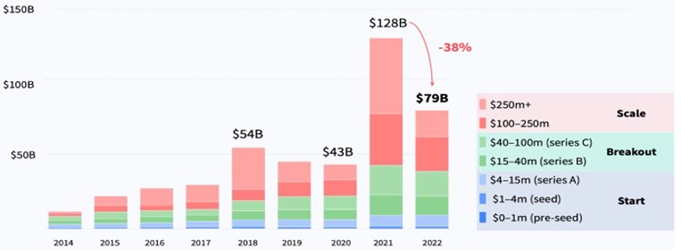
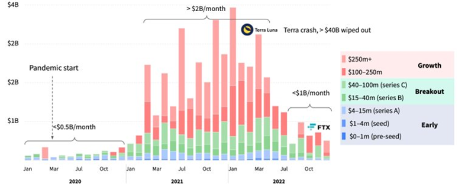
- Fintech industry continues to attract the most VC funding in 2022 (ABN AMRO Ventures, & Dealroom.co, 2023). Other industries are closing their funding gap with Fintech Industry, which is expected for health and biotech industry due to the Covid situation in 2020.
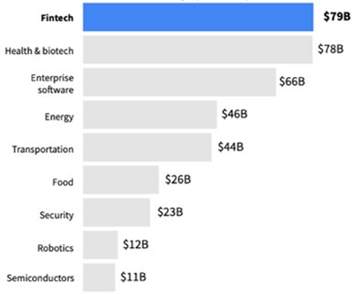
- The rate of new FinTechs Unicorns has slowed down significantly and reached the plateau level in 2022. That year also recorded the lowest number of Unicorns formed since 2020.
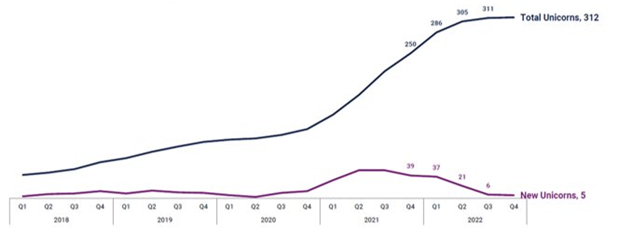
- Payments sector has re-captured the top spot in VC fundings from the Cryptocurrency sector in 2022. Cryptocurrency and Blockhain (DeFi) sectors would have retained top spot if not for the collapse of FTX and Luna that has pushed VCs to venture into a more conversative and proven Fintech sector such as Payments. However, funding in almost all Fintech sectors has dropped as expected due to the dip in global VC funding for 2022 that was highlighted earlier.
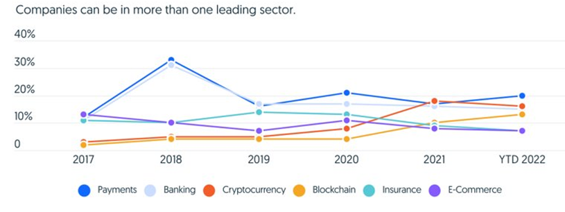
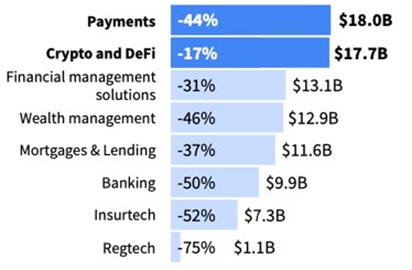
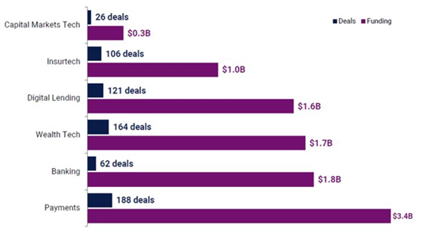
- Trends in Payments, Cryptocurrency and DeFi, Banking, Insurtech, Regtech, Wealthtech, Embedded Finance, CFO Tech stack, and Digital lending will continue to attract VC fundings. However, VCs are expected to shift their focus to invest in FinTechs with proven business models such as Net Interest Margin (NIM) such as lending, Payments (retail and SMB/SMEs), and software or sound business proposals (Gilroy et al., 2022). In addition, VCs will want assurance of their investment in FinTechs which showed evidence of profitability and retention in terms of revenue retention, gross margin, operating margin and revenue growth. An example would be the ‘Rule of 200’ where this assessment model classifies FinTechs with good profitability and revenue retention if they achieved more than 200% in revenue retention, gross margin, operating margin and revenue growth combined.
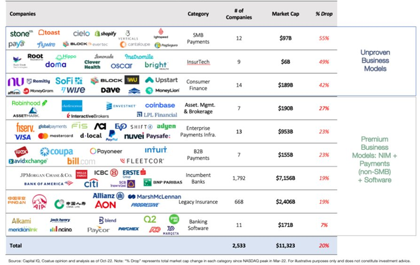
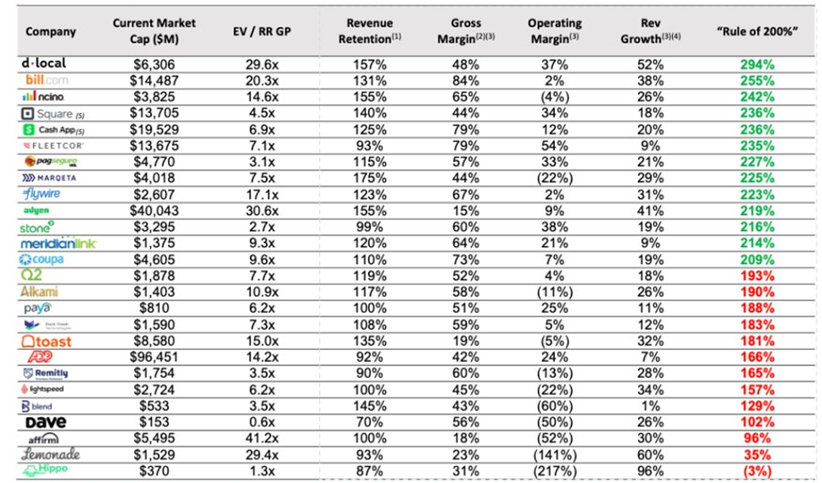
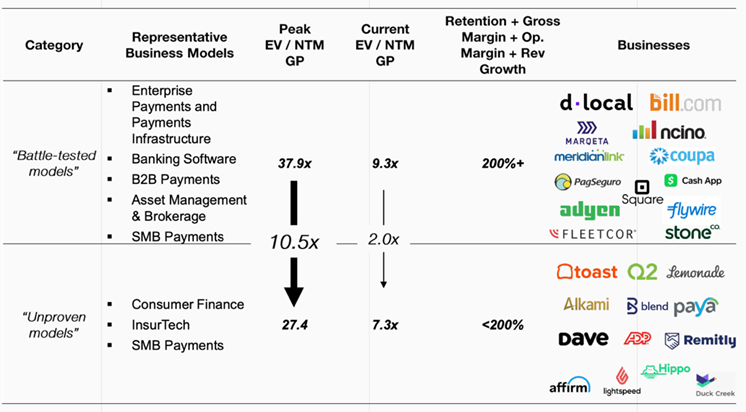
Annex B - Global Fintech Investment Trends
- Fintech investment between Q4’21 and Q4’22 showed a huge drop of fundings and deals across all regions. While the number of deals had dropped, it is not proportional to the rate of Fintech investment. For example, U.S. saw US$3.9B investment with 342 deals in Q4’22 which has a 67% reduction (US$5.5B) in Fintech investment but a lesser reduction in Fintech deals at 19% (81 deals lesser). This means there were still substantial Fintech deals but at a smaller investment amount per deal.
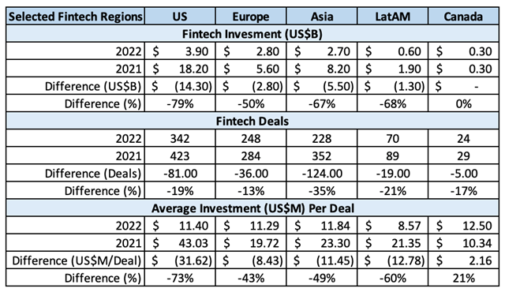
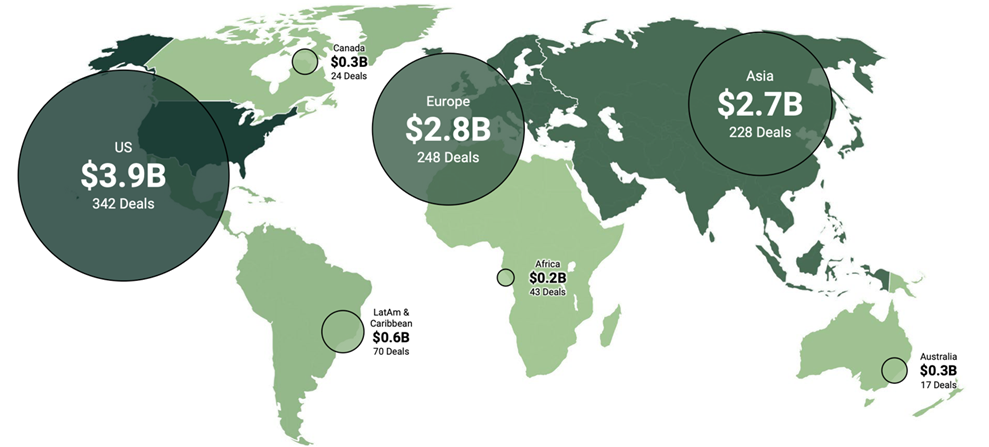
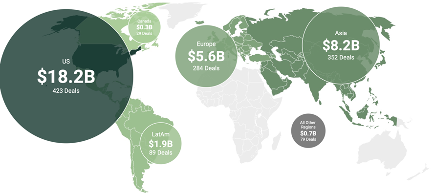
- U.S., UK, and India are top countries for Fintech investment. It is noteworthy that China was not featured in this report. Also, Indonesia and France are the only two countries that have managed a year-on-year growth between 2021 and 2022 with Indonesia and France recorded 30% and 14% growth respectively.
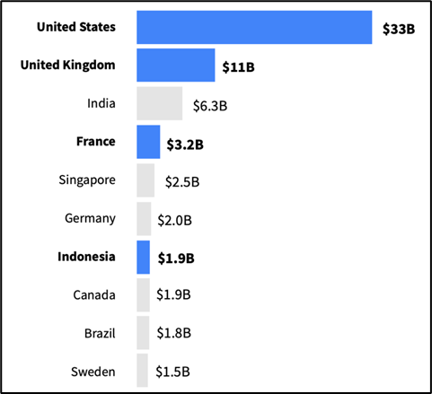
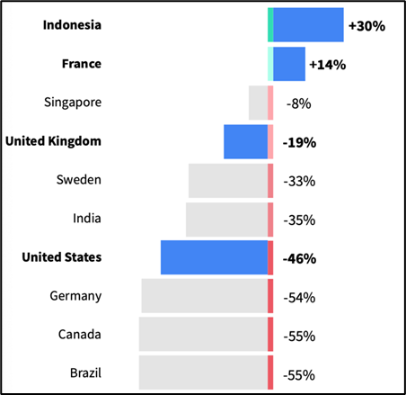
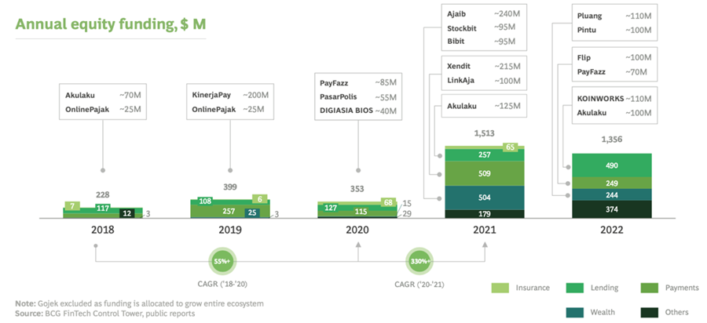
- Investment trends showed significant increase since 2020, and has a healthy spread into key segments such as Payments, InsurTech, and Wealthtech in 2021 and 2022. However, Fintech investment in Lending sector has recorded the highest Fintech sector in 2022 with US$490M which is about double of the Payments sector at US$249M. However, while Payments and Lending sectors are leading the Fintech investment fundings, Payments sector has the highest Fintech penetration in Indonesia at 74%, which signaled the maturity of this sector. As such, VCs will be less attracted to Payments sector in the Indonesia market, and will shift its focus towards emerging drivers such as Lending, Wealthtech, Insurtech, and SaaS which are assessed to high potential growth (Kumar et al.,2023).
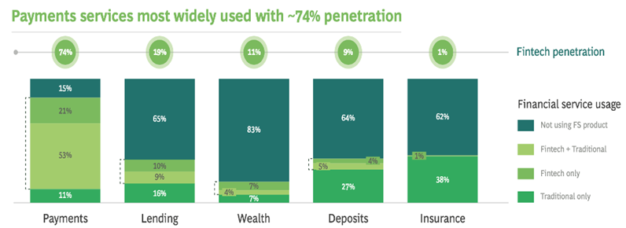
- The introduction of Government and regulators’ initiatives in Open Banking and Cryptocurrency has help FinTechs secure grants of US$70M and US$300M respectively, and supported the initiation of 10 other FinTechs such as Ayoconnet, and Pintu (Kumar et al.,2023). The constant update of encouraging regulations and initiatives in these sectors has attracted VCs and FinTechs globally to innovate in these sectors.
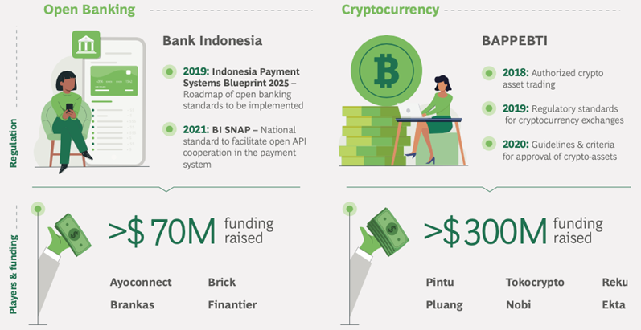
Annex C - Partnerships in the Fintech Industry
- New market entrants such as FinTechs or tech giants represent threats or opportunities to incumbents. Partnering with these new entrants is one way for banks to stay relevant in the financial services industry. Incumbent banks typically would (1) collaborate with FinTechs, (2) invest in FinTechs, or (3) build capabilities within their banks (Duran, 2018). These strategies would enable banks to complement their weakness with FinTechs’ strength to remain competitive in the financial services industry.
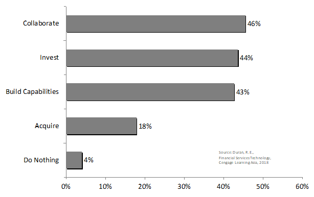